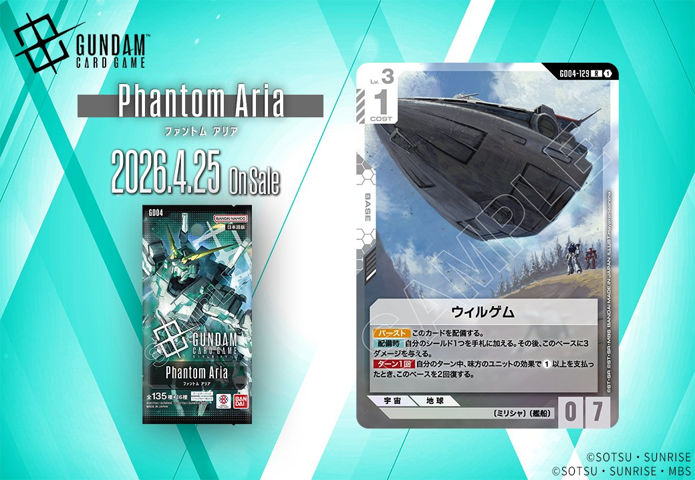

GD04 Phantom Ariaより白色の新たなBASEカード「ウィルゲム」が登場。白色デッキの基盤となるBASEカードの選択肢が拡充され、既存の白色構築に新たな戦略的アプローチをもたらす可能性を持つ1枚となっています。

ウィルゲム (GD04-129)
| 色 | 白 | タイプ | null |
| Lv | 3 | コスト | 1 |
| 特徴 | 〔ミリシャ〕、〔艦船〕 | ||
| リンク条件 | (ミリシャ)(艦船) | ||
効果: バーストこのカードを配備する。 配備時自分のシールド1つを手札に加える。その後、このベースに3 ダメージを与える。 ターン1回自分のターン中、味方のユニットの効果で1以上を支払っ たとき、このベースを2回復する。
COST1でバーストによる展開が可能なベースで、配備時にシールドを手札に加えつつ自身に3ダメージを与える独特な効果を持つ。味方ユニットがコストを支払う度にこのベースを2回復できるため、コストの重いユニットを多用するデッキでは継続的な回復が期待できる。シールドからの手札補充とユニット効果との連動により、リソース管理に優れた白色デッキの基盤として機能しそうだ。